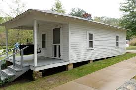
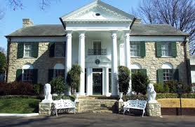
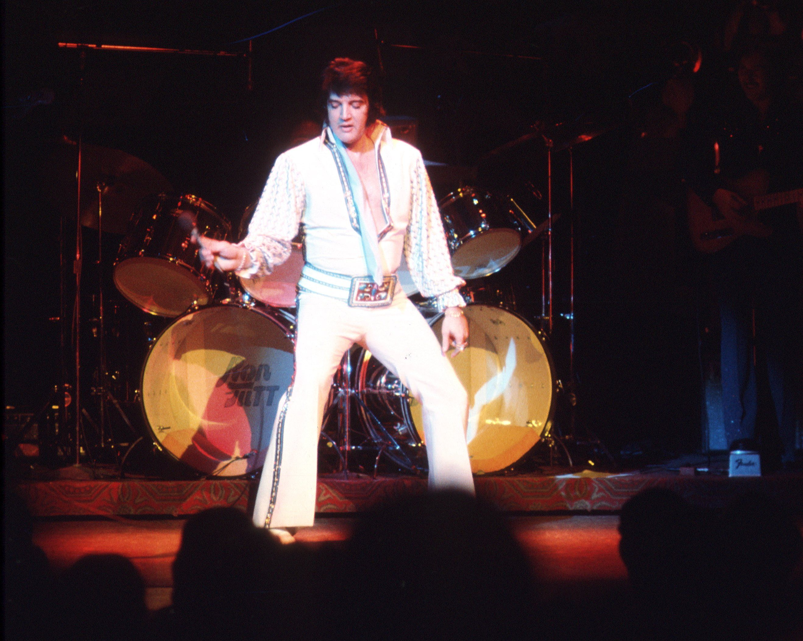
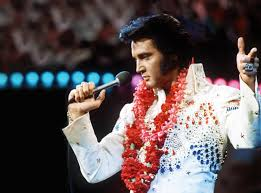

About Elvis Presley
Elvis Presley’s childhood home in Tupelo, Mississippi
Elvis Aaron Presley was born on January 8, 1935, in Tupelo, Mississippi. Raised in humble beginnings, he discovered a deep love for music early on, blending gospel, country, and rhythm & blues into a style all his own. In 1954, he recorded with Sun Records in Memphis, and by 1956, the world had taken notice.
Elvis’s iconic home, Graceland in Memphis, became a symbol of his stardom and legacy.
With hits like “Hound Dog,” “Don't Be Cruel,” and “Jailhouse Rock,” Elvis became the face of rock 'n' roll. His magnetic stage presence and hip-shaking dance moves made him a national sensation—and a controversy. In 1957, he purchased Graceland, the Memphis mansion that would become his sanctuary and a pilgrimage site for fans worldwide.
Elvis in his iconic white jumpsuit during a Vegas performance
In the late 1960s and early 70s, Elvis staged a legendary comeback. He traded Hollywood for the stage and began his historic Las Vegas residency at the International Hotel in 1969. Dressed in rhinestone-studded jumpsuits, he became a Vegas icon, performing sold-out shows that blended rock, gospel, and heartfelt ballads.
“Aloha from Hawaii” – the first concert broadcast live via satellite
In 1973, Elvis made history again with Aloha from Hawaii, the first concert broadcast live via satellite. Viewed by over a billion people worldwide, the show cemented his global stardom and showcased his powerful voice and emotional range. Even in his final years, Elvis continued performing with unmatched energy and passion.
Elvis Presley passed away on August 16, 1977, but his legend lives on through his music, style, and timeless charisma. From Tupelo to Graceland, Vegas to Hawaii, he remains the undisputed King of Rock 'n' Roll.